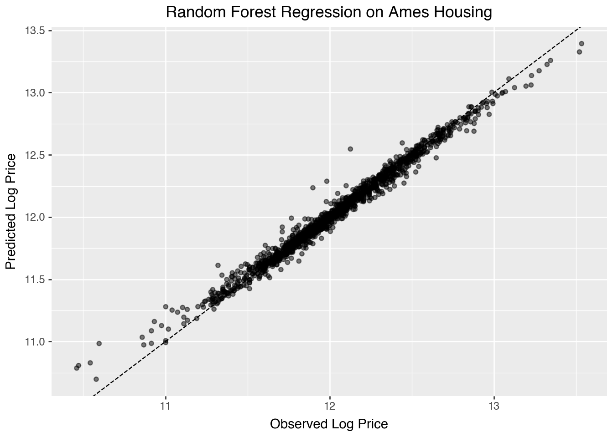

import openml
import pandas as pd
import numpy as np
# Load Ames Housing dataset (OpenML ID 42165)
dataset = openml.datasets.get_dataset(42165)
df, *_ = dataset.get_data()
df["LogPrice"] = np.log(df["SalePrice"])10 Supervised Learning
10.1 Introduction
Machine Learning (ML) is a branch of artificial intelligence that enables systems to learn from data and improve their performance over time without being explicitly programmed. At its core, machine learning algorithms aim to identify patterns in data and use those patterns to make decisions or predictions.
Machine learning can be categorized into three main types: supervised learning, unsupervised learning, and reinforcement learning. Each type differs in the data it uses and the learning tasks it performs, addressing addresses different tasks and problems. Supervised learning aims to predict outcomes based on labeled data, unsupervised learning focuses on discovering hidden patterns within the data, and reinforcement learning centers around learning optimal actions through interaction with an environment.
Let’s define some notations to introduce them:
\(X\): A set of feature vectors representing the input data. Each element \(X_i\) corresponds to a set of features or attributes that describe an instance of data.
\(Y\): A set of labels or rewards associated with outcomes. In supervised learning, \(Y\) is used to evaluate the correctness of the model’s predictions. In reinforcement learning, \(Y\) represents the rewards that guide the learning process.
\(A\): A set of possible actions in a given context. In reinforcement learning, actions \(A\) represent choices that can be made in response to a given situation, with the goal of maximizing a reward.
10.1.1 Supervised Learning
Supervised learning is the most widely used type of machine learning. In supervised learning, we have both feature vectors \(X\) and their corresponding labels \(Y\). The objective is to train a model that can predict \(Y\) based on \(X\). This model is trained on labeled examples, where the correct outcome is known, and it adjusts its internal parameters to minimize the error in its predictions, which occurs as part of the cross-validation process.
Key tasks in supervised learning include:
- Classification: Assigning data points to predefined categories or classes.
- Regression: Predicting a continuous value based on input data.
In supervised learning, the data consists of both feature vectors \(X\) and labels \(Y\), namely, \((X, Y)\).
10.1.2 Unsupervised Learning
Unsupervised learning involves learning patterns from data without any associated labels or outcomes. The objective is to explore and identify hidden structures in the feature vectors \(X\). Since there are no ground-truth labels \(Y\) to guide the learning process, the algorithm must discover patterns on its own. This is particularly useful when subject matter experts are unsure of common properties within a data set.
Common tasks in unsupervised learning include:
Clustering: Grouping similar data points together based on certain features.
Dimension Reduction: Simplifying the input data by reducing the number of features while preserving essential patterns.
In unsupervised learning, the data consists solely of feature vectors \(X\).
10.1.3 Reinforcement Learning
Reinforcement learning involves learning how to make a sequence of decisions to maximize a cumulative reward. Unlike supervised learning, where the model learns from a static dataset of labeled examples, reinforcement learning involves an agent that interacts with an environment by taking actions \(A\), receiving feedback in the form of rewards \(Y\), and learning over time which actions lead to the highest cumulative reward.
The process in reinforcement learning involves:
States: The context or environment the agent is in, represented by feature vectors \(X\).
Actions: The set of possible choices the agent can make in response to the current state, denoted as \(A\).
Rewards: Feedback the agent receives after taking an action, which guides the learning process.
In reinforcement learning, the data consists of feature vectors \(X\), actions \(A\), and rewards \(Y\), namely, \((X, A, Y)\).
10.2 Decision Trees
Decision trees are widely used supervised learning models that predict the value of a target variable by iteratively splitting the dataset based on decision rules derived from input features. The model functions as a piecewise constant approximation of the target function, producing clear, interpretable rules that are easily visualized and analyzed (Breiman et al., 1984). Decision trees are fundamental in both classification and regression tasks, serving as the building blocks for more advanced ensemble models such as Random Forests and Gradient Boosting Machines.
10.2.1 Recursive Partition Algorithm
The core mechanism of a decision tree algorithm is the identification of optimal splits that partition the data into subsets that are increasingly homogeneous with respect to the target variable. At any node \(m\), the data subset is denoted as \(Q_m\) with a sample size of \(n_m\). The objective is to find a candidate split \(\theta\), defined as a threshold for a given feature, that minimizes an impurity or loss measure \(H\).
When a split is made at node \(m\), the data is divided into two subsets: \(Q_{m,l}\) (left node) with sample size \(n_{m,l}\), and \(Q_{m,r}\) (right node) with sample size \(n_{m,r}\). The split quality, measured by \(G(Q_m, \theta)\), is given by:
\[ G(Q_m, \theta) = \frac{n_{m,l}}{n_m} H(Q_{m,l}(\theta)) + \frac{n_{m,r}}{n_m} H(Q_{m,r}(\theta)). \]
The algorithm aims to identify the split that minimizes the impurity:
\[ \theta^* = \arg\min_{\theta} G(Q_m, \theta). \]
This process is applied recursively at each child node until a stopping condition is met.
- Stopping Criteria: The algorithm stops when the maximum tree depth is reached or when the node sample size falls below a preset threshold.
- Pruning: Reduce the complexity of the final tree by removing branches that add little predictive value. This reduces overfitting and improves generalization.
10.2.2 Search Space for Possible Splits
At each node, the search space for possible splits comprises all features in the dataset and potential thresholds derived from the feature values. For a given feature, the algorithm considers each of its unique value in the current node as a possible split point. The potential thresholds are typically set as midpoints between consecutive unique values, ensuring effective partition.
Formally, let the feature set be \(\{X_1, X_2, \ldots, X_p\}\), where \(p\) is the total number of features, and let the unique values of feature \(X_j\) at node \(m\) be denoted by \(\{v_{m,j,1}, v_{m,j,2}, \ldots, v_{m,j,k_{mj}}\}\). The search space at node \(m\) includes:
- Feature candidates: \(\{X_1, X_2, \ldots, X_p\}\).
- Threshold candidates for \(X_j\): \[ \left\{ \frac{v_{m,j,i} + v_{m,j,i+1}}{2} \mid 1 \leq i < k_{mj} \right\}. \]
While the complexity of this search can be substantial, particularly for high-dimensional data or features with numerous unique values, efficient algorithms use sorting and single-pass scanning techniques to mitigate the computational cost.
10.2.3 Metrics
10.2.3.1 Classification
In classification, the split quality metric measures how pure the resulting nodes are after a split. A pure node contains observations that predominantly belong to a single class.
Gini Index: The Gini index measures node impurity by the probability that two observations randomly drawn from the node belong to different classes. A perfect split (all instances belong to one class) has a Gini index of 0. At node \(m\), the Gini index is \[ H(Q_m) = \sum_{k=1}^{K} p_{mk} (1 - p_{mk}) = 1 - \sum_{k=1}^n p_{mk}^2, \] where \(p_{mk}\) is the proportion of samples of class \(k\) at node \(m\); and \(K\) is the total number of classes The Gini index is often preferred for its speed and simplicity, and it’s used by default in many implementations of decision trees, including
sklearn.The Gini index originates from the Gini coefficient, introduced by Corrado Gini in 1912 to quantify inequality in income distributions. In that context, the Gini coefficient measures how unevenly a quantity (such as wealth) is distributed across a population. Decision tree algorithms adapt this concept of inequality to measure the impurity of a node: instead of wealth, the distribution concerns class membership. A perfectly pure node, where all observations belong to the same class, represents complete equality and yields a Gini index of zero. As class proportions become more mixed, inequality in class membership increases, leading to higher impurity values. Thus, the Gini index used in decision trees can be viewed as a statistical measure of diversity or heterogeneity derived from Gini’s original work on inequality.
Entropy (Information Gain): Derived from information theory, entropy quantifies the disorder of the data at a node. Lower entropy means higher purity. At node \(m\), it is defined as \[ H(Q_m) = - \sum_{k=1}^{K} p_{mk} \log p_{mk}. \] Entropy is commonly used in decision tree algorithms like ID3 and C4.5. The choice between Gini and entropy often depends on specific use cases, but both perform similarly in practice.
Misclassification Error: Misclassification error focuses on the most frequent class in the node. It measures the proportion of samples that do not belong to the majority class. Although less sensitive than Gini and entropy, it can be useful for classification when simplicity is preferred. At node \(m\), it is defined as \[ H(Q_m) = 1 - \max_k p_{mk}, \] where \(\max_k p_{mk}\) is the largest proportion of samples belonging to any class \(k\).
10.2.3.2 Regression Criteria
In regression, the goal is to minimize the spread or variance of the target variable within each node.
Mean Squared Error (MSE): MSE is the average squared difference between observed and predicted values (mean of the target in the node). The smaller the MSE, the better the fit. At node \(m\), it is \[ H(Q_m) = \frac{1}{n_m} \sum_{i=1}^{n_m} (y_i - \bar{y}_m)^2, \] where
- \(y_i\) is the actual value for sample \(i\);
- \(\bar{y}_m\) is the mean value of the target at node \(m\);
- \(n_m\) is the number of samples at node \(m\).
MSE works well when the target is continuous and normally distributed.
Half Poisson Deviance: Used for count target, the Poisson deviance measures the variance in the number of occurrences of an event. At node \(m\), it is \[ H(Q_m) = \sum_{i=1}^{n_m} \left( y_i \log\left(\frac{y_i}{\hat{y}_i}\right) - (y_i - \hat{y}_i) \right), \] where \(\hat{y}_i\) is the predicted count. This criterion is especially useful when the target variable represents discrete counts, such as predicting the number of occurrences of an event.
Mean Absolute Error (MAE): MAE aims to minimize the absolute differences between actual and predicted values. While it is more robust to outliers than MSE, it is slower computationally due to the lack of a closed-form solution for minimization. At node \(m\), it is \[ H(Q_m) = \frac{1}{n_m} \sum_{i=1}^{n_m} |y_i - \bar{y}_m|. \] MAE is useful when you want to minimize large deviations and can be more robust in cases where outliers are present in the data.
10.2.4 Ames Housing Example
The Ames Housing data are used to illustrate a regression tree model for predicting log house price.
As before, we retrive the data from OpenML.
A decision tree partitions the feature space into regions where the average log price is relatively constant.
from sklearn.compose import ColumnTransformer
from sklearn.preprocessing import OneHotEncoder
from sklearn.tree import DecisionTreeRegressor
from sklearn.model_selection import cross_val_score
from sklearn.pipeline import Pipeline
import plotnine as gg
import pandas as pd
numeric_features = [
"OverallQual", "GrLivArea", "GarageCars",
"TotalBsmtSF", "YearBuilt", "FullBath"
]
categorical_features = ["KitchenQual"]
preprocessor = ColumnTransformer([
("num", "passthrough", numeric_features),
("cat", OneHotEncoder(drop="first"), categorical_features)
])
X = df[numeric_features + categorical_features]
y = df["LogPrice"]
depths = range(2, 11)
cv_scores = [
cross_val_score(
Pipeline([
("pre", preprocessor),
("model", DecisionTreeRegressor(max_depth=d, random_state=0))
]),
X, y, cv=5, scoring="r2"
).mean()
for d in depths
]
list(zip(depths, cv_scores))[(2, np.float64(0.594134995704976)),
(3, np.float64(0.6712972027857058)),
(4, np.float64(0.7141792234890973)),
(5, np.float64(0.748794485599919)),
(6, np.float64(0.7587964739851765)),
(7, np.float64(0.7343953839481492)),
(8, np.float64(0.7186324525934304)),
(9, np.float64(0.7112790937242873)),
(10, np.float64(0.6938966980572193))]Cross-validation identifies an appropriate tree depth that balances fit and generalization. A too-deep tree overfits, while a shallow tree misses structure.
dt = Pipeline([
("pre", preprocessor),
("model", DecisionTreeRegressor(max_depth=4, random_state=0))
])
dt.fit(X, y)
y_pred = dt.predict(X)
df_pred = pd.DataFrame({"Observed": y, "Predicted": y_pred})
(gg.ggplot(df_pred, gg.aes(x="Observed", y="Predicted")) +
gg.geom_point(alpha=0.5) +
gg.geom_abline(slope=1, intercept=0, linetype="dashed") +
gg.labs(title="Decision Tree Regression on Ames Housing",
x="Observed Log Price", y="Predicted Log Price"))
The plot shows predicted versus observed log prices. A well-fitted model has points close to the diagonal. The decision tree naturally captures nonlinear effects and interactions, though its predictions are piecewise constant, producing visible step patterns.
10.3 Gradient-Boosted Models
Gradient boosting is a powerful ensemble technique in machine learning that combines multiple weak learners into a strong predictive model. Unlike bagging methods, which train models independently, gradient boosting fits models sequentially, with each new model correcting errors made by the previous ensemble (Friedman, 2001). While decision trees are commonly used as weak learners, gradient boosting can be generalized to other base models. This iterative method optimizes a specified loss function by repeatedly adding models designed to reduce residual errors.
10.3.1 Introduction
Gradient boosting builds on the general concept of boosting, aiming to construct a strong predictor from an ensemble of sequentially trained weak learners. The weak learners are often shallow decision trees (stumps), linear models, or generalized additive models (Hastie et al., 2009). Each iteration adds a new learner focusing primarily on the data points poorly predicted by the existing ensemble, thereby progressively enhancing predictive accuracy.
Gradient boosting’s effectiveness stems from:
- Error Correction: Each iteration specifically targets previous errors, refining predictive accuracy.
- Weighted Learning: Iteratively focuses more heavily on difficult-to-predict data points.
- Flexibility: Capable of handling diverse loss functions and various types of predictive tasks.
The effectiveness of gradient-boosted models has made them popular across diverse tasks, including classification, regression, and ranking. Gradient boosting forms the foundation for algorithms such as XGBoost (Chen & Guestrin, 2016), LightGBM (Ke et al., 2017), and CatBoost (Prokhorenkova et al., 2018), known for their high performance and scalability.
10.3.2 Gradient Boosting Process
Gradient boosting builds an ensemble by iteratively minimizing the residual errors from previous models. This iterative approach optimizes a loss function, \(L(y, F(x))\), where \(y\) represents the observed target variable and \(F(x)\) the model’s prediction for a given feature vector \(x\).
Key concepts:
- Loss Function: Guides model optimization, such as squared error for regression or logistic loss for classification.
- Learning Rate: Controls incremental updates, balancing training speed and generalization.
- Regularization: Reduces overfitting through tree depth limitation, subsampling, and L1/L2 penalties.
10.3.2.1 Model Iteration
The gradient boosting algorithm proceeds as follows:
Initialization: Define a base model \(F_0(x)\), typically the mean of the target variable for regression or the log-odds for classification.
Iterative Boosting: At each iteration \(m\):
Compute pseudo-residuals representing the negative gradient of the loss function at the current predictions. For each observation \(i\): \[ r_i^{(m)} = -\left.\frac{\partial L(y_i, F(x_i))}{\partial F(x_i)}\right|_{F(x)=F_{m-1}(x)}, \] where \(x_i\) and \(y_i\) denote the feature vector and observed value for the \(i\)-th observation, respectively. The residuals represent the direction of steepest descent in function space, so fitting a learner to them approximates a gradient descent step minimizing \(L(y, F(x))\).
Fit a new weak learner \(h_m(x)\) to these residuals.
Update the model: \[ F_m(x) = F_{m-1}(x) + \eta \, h_m(x), \] where \(\eta\) is a small positive learning rate (e.g., 0.01–0.1), controlling incremental improvement and reducing overfitting.
In some implementations, the update step includes an additional multiplier determined by a one-dimensional line search that minimizes the loss function at each iteration. Specifically, the optimal step length is defined as \[ \gamma_m = \arg\min_\gamma \sum_{i=1}^n L\bigl(y_i,\, F_{m-1}(x_i) + \gamma\, h_m(x_i)\bigr), \] leading to an updated model of the form \[ F_m(x) = F_{m-1}(x) + \eta\, \gamma_m\, h_m(x), \] where \(\eta\) remains a shrinkage factor controlling the overall rate of learning, while \(\gamma_m\) adjusts the step size adaptively at each iteration.
Final Model: After \(M\) iterations, the ensemble model is: \[ F_M(x) = F_0(x) + \sum_{m=1}^M \eta \, h_m(x). \]
Stochastic gradient boosting is a variant that enhances gradient boosting by introducing randomness through subsampling at each iteration, selecting a random fraction of data points (typically 50%–80%) to fit the model . This randomness helps reduce correlation among trees, improve model robustness, and lower the risk of overfitting.
10.3.3 Boosted Trees with Ames Housing
Boosted trees apply the gradient boosting framework to decision trees. They build an ensemble of shallow trees, each trained to correct the residual errors of the preceding ones. By sequentially emphasizing observations that are difficult to predict, the model progressively improves its overall predictive accuracy. We now apply gradient boosting using the same preprocessed features. Boosting combines many shallow trees, each correcting the residual errors of its predecessors, to improve predictive accuracy.
from sklearn.ensemble import GradientBoostingRegressor
# Define a range of tree counts for tuning
n_estimators_list = [50, 100, 200, 400]
cv_scores_gb = [
cross_val_score(
Pipeline([
("pre", preprocessor),
("model", GradientBoostingRegressor(
n_estimators=n,
learning_rate=0.05,
max_depth=3,
random_state=0))
]),
X, y, cv=5, scoring="r2"
).mean()
for n in n_estimators_list
]
list(zip(n_estimators_list, cv_scores_gb))[(50, np.float64(0.8199019428994425)),
(100, np.float64(0.8437789746745888)),
(200, np.float64(0.8451433195728157)),
(400, np.float64(0.8405078307788265))]Cross-validation shows how increasing the number of boosting rounds initially improves performance but eventually risks overfitting when too many trees are added.
gb = Pipeline([
("pre", preprocessor),
("model", GradientBoostingRegressor(
n_estimators=200,
learning_rate=0.05,
max_depth=3,
random_state=0))
])
gb.fit(X, y)
y_pred_gb = gb.predict(X)
df_pred_gb = pd.DataFrame({"Observed": y, "Predicted": y_pred_gb})
(gg.ggplot(df_pred_gb, gg.aes(x="Observed", y="Predicted")) +
gg.geom_point(alpha=0.5) +
gg.geom_abline(slope=1, intercept=0, linetype="dashed") +
gg.labs(title="Gradient-Boosted Regression on Ames Housing",
x="Observed Log Price", y="Predicted Log Price"))
The boosted model produces predictions that are generally closer to the 45-degree line than a single tree, reflecting improved accuracy and smoother response across the feature space.
Gradient-boosted trees introduce several parameters that govern model complexity, learning stability, and overfitting control:
n_estimators: the number of trees (boosting rounds). More trees can reduce bias but increase computation and risk of overfitting. learning_rate — the shrinkage parameter \(\eta\) controlling the contribution of each new tree. Smaller values (e.g., 0.05 or 0.01) require more trees but often yield better generalization.max_depth: the maximum depth of each individual tree, limiting the model’s ability to overfit local noise. Shallow trees (depth 2–4) are typical weak learners.subsample: the fraction of data used in each iteration. Values below 1.0 introduce randomness (stochastic boosting), improving robustness and reducing correlation among trees.min_samples_splitandmin_samples_leaf: minimum numbers of observations required for splitting or forming leaves. These control tree granularity and help regularize the model.
In practice, moderate learning rates with a sufficiently large number of estimators and shallow trees often perform best, balancing bias, variance, and computational cost.
10.3.4 XGBoost: Extreme Gradient Boosting
XGBoost is a scalable and efficient implementation of gradient-boosted decision trees (Chen & Guestrin, 2016). It has become one of the most widely used machine learning methods for structured data due to its high predictive performance, regularization capabilities, and speed. XGBoost builds an ensemble of decision trees in a stage-wise fashion, minimizing a regularized objective that balances training loss and model complexity.
The core idea of XGBoost is to fit each new tree to the gradient of the loss function with respect to the model’s predictions. Unlike traditional boosting algorithms like AdaBoost, which use only first-order gradients, XGBoost optionally uses second-order derivatives (Hessians), enabling better convergence and stability (Friedman, 2001).
XGBoost is widely used in data science competitions and real-world applications. It supports regularization (L1 and L2), handles missing values internally, and is designed for distributed computing.
XGBoost builds upon the same foundational idea as gradient boosted machines—sequentially adding trees to improve the predictive model— but introduces a number of enhancements:
| Aspect | Traditional GBM | XGBoost |
|---|---|---|
| Implementation | Basic gradient boosting | Optimized, regularized boosting |
| Regularization | Shrinkage only | L1 and L2 regularization |
| Loss Optimization | First-order gradients | First- and second-order |
| Missing Data | Requires manual imputation | Handled automatically |
| Tree Construction | Depth-wise | Level-wise (faster) |
| Parallelization | Limited | Built-in |
| Sparsity Handling | No | Yes |
| Objective Functions | Few options | Custom supported |
| Cross-validation | External via GridSearchCV |
Built-in xgb.cv |
XGBoost is therefore more suitable for large-scale problems and provides better generalization performance in many practical tasks.
10.4 Random Forest
This section was prepared by Alex Plotnikov, first-year master’s student in statistics.
10.4.1 Random Forest Algorithm
Random forests are an ensemble method that was developed by Leo Breiman in 2001 to improve the performance of tree-based models. This model creates multiple trees in parallel. There are a few key differences in how trees in a random forest are constructed compared to the decision tree algorithm. The main differences are:
- Sample of data used for each tree.
- Number of features selected at each node.
- Trees are allowed to grow deep in random forests.
- Prediction is made based on aggregating results from all trees.

10.4.1.1 Bagging (Bootstrap Aggregation)
Unlike decision trees which are trained on the entire dataset, random forests use bagging to create a sample for each tree. Afterwards, the tree is trained on that specific sample.
The term bagging comes from bootstrap aggregation. This process involves creating a sample set with the same number of records as the original by sampling from the original dataset with replacement. This means that observations may appear multiple times in the sample dataset.
For one draw:
\[ P(\text{not selected}) = 1 - \frac{1}{N}. \]
For N draws (since we sample N times with replacement):
\[ P(\text{not selected in entire sample}) = \left(1 - \frac{1}{N}\right)^N. \]
As N approaches infinity:
\[ \left(1 - \frac{1}{N}\right)^N \approx e^{-1} \approx 0.3679. \]
So, about 36.8% of the original observations are not included in a given bootstrap sample.
Therefore, the remaining portion is:
\[ 1 - e^{-1} \approx 0.632. \]
On average, 63.2% of the values in each sample are non-repeated. Bagging helps reduce overfitting to noise and reducing variance of the outcome for a more stable model.
10.4.1.2 Feature Sampling and Tree Depth
Random forests also calculate impurity on a subset of all features rather than all features as in a decision tree. At each node, the algorithm selects a random subset of features and calculates the impurity metric for these features. At the next node, the algorithm takes another sample of the entire feature set and calculates the metric on this new set of features.
For \(p\) features, the algorithm uses (\(\sqrt{p}\)) features for classification and (\(\frac{p}{3}\)) features for regression.
Trees in random forests are also usually allowed to grow to max depth. The goal of having multiple trees is reducing variance of output and overfitting, and this is achieved through averaging of trees.
10.4.1.3 Prediction
Random forests make predictions by aggregating results from all trees.
For classification, this is done by each tree predicting a label and then the forest combines predictions from all trees to output a label based on a majority vote.
For regression, the forest takes the numerical value predicted by each tree and then calculates the average for the output.
10.4.1.4 Algorithm Comparison
| Decision Trees | Random Forests | |
|---|---|---|
| Data Set | Entire dataset | Bootstrap sample for each tree |
| Features | All features | Random subset at each node |
| Tree Size | Based on input | Can be modified with input but usually until tree fully grows |
| Prediction | Leaf where new data lands | Majority vote of all trees for classification, average for regression |
10.4.2 RandomForestClassifier Parameters
These concepts can be adjusted as parameters in the RandomForestClassifier class in Python. Not all parameters are shown here as they are similar to decision tree parameters:
n_estimators: number of trees to train in forest.max_depth: max depth of the tree in the forest, default value is set toNonewhich allows the tree to grow to max depth.max_features: number of features to use at each node. Default value is'sqrt'and can also be set to'log2'andNone.bootstrap: whether or not to use bootstrap for each tree, ifFalsethen each tree will use the entire dataset.max_samples: the maximum number of samples for each tree can be adjusted rather than the same size as the dataset.
10.4.3 Random Forests in Python (Ames Data)
The below example shows a random forest regression on the Ames data. We construct a plot to show the observed log price against the predicted log price.
import openml
import os
import pandas as pd
import numpy as np
from sklearn.model_selection import train_test_split
from sklearn.ensemble import RandomForestClassifier # For classification
from sklearn.ensemble import RandomForestRegressor # For regression
from sklearn.metrics import accuracy_score, mean_squared_error # For evaluation
import plotnine as gg
# Load Ames Housing (OpenML ID 42165)
dataset = openml.datasets.get_dataset(42165)
df, *_ = dataset.get_data()
df["LogPrice"] = np.log(df["SalePrice"])
ind_columns = df.columns.drop(['Id','SalePrice','LogPrice']).tolist()
df_encoded = pd.get_dummies(df[ind_columns], drop_first=True)
X = df_encoded
y = df['LogPrice']
X_train, X_test, y_train, y_test = train_test_split(X, y,
test_size=0.2, random_state=42)
# # For Classification
# model = RandomForestClassifier(n_estimators=100, random_state=42)
# model.fit(X_train, y_train)
# For Regression (if 'target' was continuous)
model = RandomForestRegressor(n_estimators=100, random_state=42)
model.fit(X_train, y_train)
y_pred = model.predict(X_test)
# For graph
dt = RandomForestRegressor(n_estimators=100, random_state=42)
dt.fit(X, y)
y_pred = dt.predict(X)
df_pred = pd.DataFrame({"Observed": y, "Predicted": y_pred})
(gg.ggplot(df_pred, gg.aes(x="Observed", y="Predicted")) +
gg.geom_point(alpha=0.5) +
gg.geom_abline(slope=1, intercept=0, linetype="dashed") +
gg.labs(title="Random Forest Regression on Ames Housing",
x="Observed Log Price", y="Predicted Log Price"))
10.4.4 Further Reading
- Classification and Regression Trees. Brieman, Friedman, Olshen, Stone 1986.
- Bagging Predictors. Brieman 1994.
- Random Forests. Brieman 2001.
- Random Forest Class - scikit
10.5 Synthetic Minority Over-sampling Technique (SMOTE)
This section was written by Hannah Levine, a junior majoring in Applied Data Analysis.
10.5.1 Introduction
In classification problems, imbalanced data refers to skewed class distribution. Classification problems use numerical variables to produce a categorical outcome, like diagnosing a disease based on clinical data or detecting fraudulent transactions. In a simple example, you have 2 classes for a medical diagnosis, “healthy” and “not healthy”. For rare diseases, there can be a large difference in the amount of individuals who are “healthy” and who are “not healthy”, with the “healthy” far outnumbering the “not healthy”. The “not healthy” class is known as the minority class.
This is important because machine learning models can become biased towards the majority class, and be innacurate in predicting for the minority class. This is especially apparent in problems with multiple classes. Adressing this class imbalance helps to improve the accuracy of the model. An easy solution is to just oversample the minority class, creating duplicates. However, this doesn’t really add any new information to the model. Another solution is undersampling of the majority class, but then important information might be left out. A better technique is Synthetic Minority Over-Sampling Technique, or SMOTE.
10.5.2 SMOTE
While random oversampling creates exact replicas of minority observations, SMOTE creates synthetic samples based on the existing observations in the minority class.
- SMOTE identifies minority class(es) in the dataset
- For each observation in the minority class, SMOTE identifies the k nearest neighbors, with k being specified prior (usually k=5).
- A line is drawn between the minority observation and one of its k nearest neighbors.
- The difference is found, multiplied by a random number between 0 and 1, then added to the initial observation to generate the synthetic sample.
- This process is repeated until the desired ratio is reached, usually when the minority class equals the size of the majority class.
This process is shown by the figure below:

The initial majority and minority classes are imbalanced, with the minority only having 2 points and the majority having 8. After SMOTE is applied, the total of minority and synthetic points equals the number of majority points. You can see how the synthetic points are all between the initial 2 minority points. In larger datasets, this can look almost like lines drawn between multiple sets of minority points. The resulting dataset is more balanced, but there’s less of a chance of overlapping data points with the originals because it’s not duplicates.
This can also be demonstrated by: \[ x_{new} = x_{i} + \lambda(x_{neighbor} - x_{i}), \] where \(x_{i}\) is the selected minority observation, \(x_{new}\) is the generated synthetic sample, \(\lambda\) is a random number between 0 and 1 sampled from a uniform distribution, and \(x_{neighbor}\) is the randomly chosen neighbor out of the identified k neearest neighbors.
10.5.3 Example: Created Synthetic Dataset
We can generate a random dataset using the make_classification function from sklearn.datasets.
from sklearn.datasets import make_classification
from collections import Counter
from imblearn.over_sampling import SMOTE
import matplotlib.pyplot as plt
# create imbalanced dataset
X, y = make_classification(
n_samples=1000,
n_features=2,
n_informative=2,
n_redundant=0,
n_clusters_per_class=1,
weights=[0.99, 0.01],
random_state=1234
)
print(f"Original class distribution: {Counter(y)}")Original class distribution: Counter({np.int64(0): 983, np.int64(1): 17})# apply SMOTE
smote = SMOTE(random_state=1234)
X_resampled, y_resampled = smote.fit_resample(X, y)
print("After SMOTE class distribution:", Counter(y_resampled))After SMOTE class distribution: Counter({np.int64(0): 983, np.int64(1): 983})For the application of SMOTE, I only specify a random state to ensure reproducibility. Other parameters that can be used are sampling_strategy and k_neighbors.
Now we can visualize the distribution of the data.
orig_counts = Counter(y)
smote_counts = Counter(y_resampled)
fig, (ax1, ax2) = plt.subplots(1, 2, figsize=(12, 5))
ax1.bar(orig_counts.keys(), orig_counts.values(), color=['#DEA8FF', '#A3007D'])
ax1.set_title("Class Distribution Before SMOTE")
ax1.set_xlabel("Class")
ax1.set_ylabel("Count")
ax1.set_xticks([0, 1], ["Majority (0)", "Minority (1)"])
ax2.bar(smote_counts.keys(), smote_counts.values(), color=['#DEA8FF', '#A3007D'])
ax2.set_title("Class Distribution After SMOTE")
ax2.set_xlabel("Class")
ax2.set_ylabel("Count")
ax2.set_xticks([0, 1], ["Majority (0)", "Minority (1)"])
plt.tight_layout()
plt.show()
Looking at the bar charts, you can see the difference in class size before and after using SMOTE. To see if the application of SMOTE actually made a difference, we can look at models for the original dataset and the after SMOTE dataset.
from sklearn.model_selection import train_test_split
from sklearn.linear_model import LogisticRegression
from sklearn.metrics import confusion_matrix, classification_report
X_train, X_test, y_train, y_test = train_test_split(
X, y, test_size=0.3, random_state=1234, stratify=y
)
# original
model_original = LogisticRegression(random_state=1234)
model_original.fit(X_train, y_train)
y_pred_original = model_original.predict(X_test)
print("=== Model trained on ORIGINAL data ===\n")
print(classification_report(y_test, y_pred_original, zero_division=0))
print("\nConfusion Matrix:")
print(confusion_matrix(y_test, y_pred_original))=== Model trained on ORIGINAL data ===
precision recall f1-score support
0 0.98 1.00 0.99 295
1 0.00 0.00 0.00 5
accuracy 0.98 300
macro avg 0.49 0.50 0.50 300
weighted avg 0.97 0.98 0.98 300
Confusion Matrix:
[[295 0]
[ 5 0]]Looking at the report, 98% of the cases that were predicted to be class 0 were predicted correctly. 100% of the cases that were actually class 0 were predicted to be class 0. Meanwhile, 0% of the cases were even predicted to be class 1. This is super unrealistic, and it seems like the model completely ignored the minority class. The confusion matrix suppports this, it shows that no cases were predicted to be class 1 at all, while 295 cases were correctly predicted to be class 0 (True Positive), and 5 cases were incorrectly predicted to be class 0 (False Positive).
# SMOTE
X_train_resampled, y_train_resampled = smote.fit_resample(X_train, y_train)
model_smote = LogisticRegression(random_state=1234)
model_smote.fit(X_train_resampled, y_train_resampled)
y_pred_smote = model_smote.predict(X_test)
print("=== Model trained with SMOTE ===\n")
print(classification_report(y_test, y_pred_smote))
print("\nConfusion Matrix:")
print(confusion_matrix(y_test, y_pred_smote))=== Model trained with SMOTE ===
precision recall f1-score support
0 1.00 0.76 0.86 295
1 0.05 0.80 0.10 5
accuracy 0.76 300
macro avg 0.52 0.78 0.48 300
weighted avg 0.98 0.76 0.85 300
Confusion Matrix:
[[223 72]
[ 1 4]]Looking at the model trained with SMOTE data, the report is much more realistic. 80% of the cases that were in class 1 were correctly predicted to be class 1. However, only 5% of the cases that were predicted to be class 1 actually were class 1. The rest were actually class 0. Looking at the confusion matrix, 223 cases were correctly predicted to be class 0 and only 1 case was incorrectly predicted to be class 0.
10.5.4 Variations and Extensions of SMOTE
SMOTE is very helpful in addressing class imbalance, but with larger datasets and higher-dimensional class spaces other extensions have been developed to help handle those larger scenarios. This includes Borderline SMOTE, ADASYN, SMOTE-ENN, SMOTE+TOMEK, and SMOTE-NC.
Borderline SMOTE was desgined to address the misclassification of minority class observations that are near or on the borderline between classes. Because they are on or near the borderlines, they are harder to classify and more likely to be mislabeled. Borderline SMOTE generates more synthetic samples near the borderlines between the majority and minority classes, providing more challenging observations to classify in hopes that it will improve the performance of classifiers.
ADASYN, or Adaptive Synthetic Sampling Approach, focuses on finding and handling regions where the imbalance is more severe. For each minority class observation, ADASYN measures how many of its k nearest neighbors belong to the majority class. If the minority observation has more nearest neighbors that are a part of the majority class, it is considered a high density area. The algorithm then generates more synthetic samples in the higher density regions, which are the regions with a greater imbalance. This allows the dataset to become more uniform by balancing more severely imbalanced areas.
SMOTE-ENN, or SMOTE Edited Nearest Neighbors, combines SMOTE with the ENN rule. The ENN rule is used to remove misclassified samples. The point of combining these techniques is to improve the overall quality of the dataset. SMOTE is applied first to generate synthetic samples, then ENN is used to remove both synthetic and original samples that have a majority of their nearest neighbors that are the opposite class. This provides a cleaner dataset with more distinct classes.
SMOTE-TOMEK links combine SMOTE and TOMEK links. TOMEK links are pairs of very close instances that are in opposite classes. By removing these links, overlap between classes is reduced and the classes are more distinct. For every observation in the dataset, the nearest neighbor from the same class and the nearest neighbor from the opposite class is found. Each pair of observations is analyzed to see if it forms a TOMEK link. If a link is found, the two observations are marked for removal. Once all TOMEK links have been found, the observations that are involved are removed. This technique also reduces overlap between classes, and improves the distinction of classes.
SMOTE-NC, or SMOTE Nominal Continuous, is used for datasets that are mixed nominal (categorical) and continuous variables. SMOTE is great when dealing with datasets with only numerical variables, but runs into problems when there are categorical variables. SMOTE operates in the numerical differences between observations and their neighbors, so categorical variables don’t work with it. SMOTE-NC addresses this by seperately considering the categorical variables, and ensuring the categorical features of the synthetic samples align with those of the original data.
10.5.5 Conclusion
SMOTE is a great tool to handle imbalanced classes in datasets. By creating synthetic samples from real observations in the minority class, the dataset is balanced while still having a good range of information and not overfitting. It’s important to note that SMOTE does not guaruntee that a model will perform well. It can help with prediction on the minority class, but it doesn’t always mean that the overall performance of the model improves. It also can create noisy samples in dense or overlapping regions. It’s important to analyze the problem to determine if SMOTE is worth applying, or if another method might be better.
10.5.6 Further Readings
Gudluri, S. (2025) SMOTE for Imbalanced Classification With Python
Brownlee, J. (2020) A Gentle Introduction to Imbalanced Classification
Devanathan, H. (2024) Creating SMOTE Oversampling from Scratch
10.6 Naive Bayes
Naive Bayes classifier is a supervised learning algorithm based on Bayes’ Theorem for solving classification problems (Domingos & Pazzani, 1997). This method determines which category a sample belongs to by calculating the posterior probability of each category, and assumes that each feature is independent of each other under the conditions of the given category.
This “naive” assumption greatly simplifies the model computation and makes naive Bayes a classical algorithm that is both fast and stable.
In statistical learning and machine learning, naive Bayes is widely used for tasks such as text classification, medical diagnosis, credit risk assessment, and anomaly detection. Despite its relatively strict assumptions, it still performs well in high dimensional data scenarios due to its robustness, low computational cost, and good interpretability (Rish, 2001).
10.6.1 Theoretical basis
10.6.1.1 Bayes theorem
The theoretical basis of Naive Bayes classifier is Bayes’ Theorem. It describes how to update our level of trust in an event after new observation information is available.
10.6.1.1.1 Basic form
The basic form of Bayes theorem is:
\[ P(A|B) = \frac{P(B|A)\,P(A)}{P(B)}. \]
Among them:
- \(P(A)\): Prior Probability of event \(A\), representing the initial belief about event \(A\) in the absence of any additional information.
- \(P(B|A)\): Likelihood, denotes the probability of observing \(B\) given the occurrence of \(A\).
- \(P(A|B)\): Posterior Probability, which is the updated probability of event \(A\) occurring after the observation of \(B\).
- \(P(B)\): Marginal Probability of event \(B\), which represents the overall probability of observing \(B\) under all possible scenarios.
10.6.1.1.2 Application to classification problems
In the classification task, we let:
- \(Y\) is the category variable (e.g., “Is it a serious accident”, “is it spam”);
- \(X = (x_1, x_2, \ldots, x_n)\) is the observed eigenvector.
Bayes theorem can be rewritten as follows.
\[ P(Y|X) = \frac{P(X|Y)\,P(Y)}{P(X)}. \]
Here:
- \(P(Y)\): prior probability, reflecting the distribution of each category in the population sample;
- \(P(X|Y)\): likelihood function, which represents the probability of occurrence of feature \(X\) under the category \(Y\);
- \(P(X)\): the normalization term, which is used to ensure that the posterior probabilities of all categories sum to one;
- \(P(Y|X)\): posterior probability, which represents the likelihood that the sample after a given feature \(X\) belongs to the class \(Y\).
Because \(P(X)\) is the same for all categories, it can be ignored when comparing which category has a greater probability. The prediction criteria of the model are therefore simplified as follows.
\[ \hat{Y} = \arg\max_Y P(Y|X) = \arg\max_Y P(X|Y)\,P(Y). \]
In other words: Instead of calculating all probabilities, we can simply compare the “prior × likelihood” of each category which is greater.
10.6.1.1.3 Intuitive explanation
Bayes’ theorem can be understood as a “belief update formula” : When we obtain new observational information \(X\), our belief about a certain category \(Y\) changes.
| stage | concept | meaning |
|---|---|---|
| Prior \(P(Y)\) | Our original knowledge of the category \(Y\) | For example: 30% of serious accidents |
| Likelihood \(P(X|Y)\) | probability of feature \(X\) under category \(Y\) | For example: a higher proportion of serious accidents in nighttime accidents |
| A posterior \(P(Y|X)\) | update probability after combining observations | For example, if it is at night, the probability of a serious accident rises to about 56% |
In other words, Bayes’ theorem lets us update beliefs with data. It is this updating mechanism that naive Bayes uses for classification.
10.6.1.2 Conditional independence assumption
Naive Bayes’ “naive” comes from a key assumption: Given the category \(Y\), the individual features \(x_i\) are conditionally independent among each other (Domingos & Pazzani, 1997). Namely:
\[ P(X|Y) = \prod_{i=1}^{n} P(x_i|Y) \]
This assumption greatly simplifies the calculation of the joint distribution. Originally we needed to estimate \(P(x_1,x_2,... x_n|Y)\) such a high-dimensional joint probability, But with the independence assumption, one only needs to estimate the conditional probability \(P(x_i|Y)\) of each individual feature.
This is not always true in real data, but in most scenarios it is still satisfactory, This is especially the case when the correlation between features is weak or the sample size is large enough.
10.6.1.3 Parameter estimates with likelihood functions
The core of model training is the estimation of two types of parameters:
- Prior probability \(P(Y)\)
Represents the proportion of categories occurring in the population:
\[ \hat{P}(Y_k) = \frac{N_k}{N}, \]
Where \(N_k\) is the number of samples for category \(k\) and \(N\) is the total number of samples.
- Conditional probability \(P(x_i|Y)\)
- If the feature is discrete:
\[ \hat{P}(x_i|Y) = \frac{\text{count}(x_i,Y)}{\text{count}(Y)}. \]
- If the feature is continuous, assume that it follows a Gaussian distribution under each category:
\[ P(x_i|Y) = \frac{1}{\sqrt{2\pi\sigma_{Y,i}^2}} \exp\! \left(-\frac{(x_i-\mu_{Y,i})^2}{2\sigma_{Y,i}^2}\right) \]
where \(\mu_{Y,i}\) and \(\sigma_{Y,i}^2\) are the mean and variance of feature \(x_i\) among all samples in class \(Y\), respectively.
These parameters are usually obtained by Maximum Likelihood Estimation (MLE).
10.6.1.4 Class Prediction and Log Form
The goal of model prediction is to find the class that maximizes the posterior probability:
\[ \hat{Y} = \arg\max_Y P(Y) \prod_{i=1}^n P(x_i|Y) \]
However, in practice, because continuous multiplication can lead to numerical underflow, We usually take logarithms and turn multiplication into addition:
\[ \log P(Y|X) = \log P(Y) + \sum_{i=1}^{n} \log P(x_i|Y) \]
The final output of the model is:
\[ \hat{Y} = \arg\max_Y \big[\log P(Y) + \sum_i \log P(x_i|Y)\big]. \]
In this way, not only accuracy problems can be avoided, but also the contribution of each feature to the classification result can be observed more intuitively.
10.6.1.5 Theoretical Performance and Advantages and Limitations
- Advantages
- The algorithm is simple, the computational complexity is linear, and the training and prediction speed is extremely fast;
- Good performance on high dimensional data (such as bag-of-words model);
- Good performance on small sample data; The model results are highly interpretable; Certain robustness against noisy data and missing data.
- Limitations
Conditional independence assumption is often not true, and performance may decrease when feature correlation is strong; Inability to capture feature interaction effects; For the values of features that have not appeared before, there may be a zero probability problem; Output probability estimates are not necessarily reliable (often biased toward 0 or 1).
10.6.1.6 Laplace Smoothing
In naive Bayes, if a feature value never occurs in the training set, its corresponding probability is estimated to be zero. As a result, the whole product is 0 and the classifier outputs the wrong result. To avoid this situation, Laplace Smoothing is introduced.
That is to add a constant \(\alpha > 0\) (usually 1) to the probability estimate:
\[ \hat{P}(x_i|Y) = \frac{\text{count}(x_i,Y) + \alpha} {\sum_{x_i'}(\text{count}(x_i',Y) + \alpha)}. \]
So even if a value doesn’t appear in the training set, the probability is not zero, The model is thus more stable and robust.
10.6.1.7 Surprisingly Good Performance
Although the conditional independence assumption is often not strictly true, naive Bayes still performs surprisingly well in practice. This is mainly due to the following:
Robustness : Even if there is some correlation between features, the classification result is still accurate as long as the dependence between different categories is not very different.
Error Compensation : The bias caused by conditional independence assumption often cancerates each other when multiple features are combined.
Implicit Regularization : Feature independence makes the model complexity low and can effectively prevent overfitting.
High-dimensional Advantage : In scenarios where the number of features is much larger than the number of samples, such as text classification, naive Bayes is almost always more stable than linear models.
10.6.2 Types of Naive Bayes
There is not just one form of naive Bayesian algorithm. According to the type of feature variable (continuous or discrete), the value characteristics of the feature (Boolean, count, frequency, etc.) and the distribution assumption of the data, naive Bayes can be divided into the following main types:
10.6.2.1 Gaussian Naive Bayes
When the data feature is continuous variable, each feature is assumed to follow Gaussian distribution under a given category:
\[ P(x_i|Y) = \frac{1}{\sqrt{2\pi\sigma_{Y,i}^2}} \exp\! \left(-\frac{(x_i - \mu_{Y,i})^2}{2\sigma_{Y,i}^2}\right) \]
The advantages of Gaussian naive Bayes are:
- suitable for continuous characteristics (e.g. age, temperature, price, etc.).
- Computationally efficient.
- Parameter estimation only requires sample mean and variance.
- Good results can still be achieved for nonlinear separable data.
10.6.2.2 Categorical Naive Bayes
Categorical naive Bayes is used when the feature is discrete (categorical) variable. Assume that each feature follows a categorical distribution under the category \(Y\):
\[ P(x_i|Y) = \frac{\text{count}(x_i,Y) + \alpha} {\sum_{x_i'} (\text{count}(x_i',Y) + \alpha)} \]
Where \(\alpha\) is the smoothing coefficient (usually 1) and is used to avoid the zero-probability problem. It is often used to analyze categorical characteristic data, such as region, color, occupation type, etc.
10.6.2.3 Bernoulli Naive Bayes
Bernoulli naive Bayes is used when the features take only two values, such as 0/1, True/False. It assumes that each feature follows a Bernoulli Distribution under the category \(Y\):
\[ P(x_i|Y) = P_i^{x_i} (1-P_i)^{(1-x_i)}, \]
Where \(P_i = P(x_i=1|Y)\). Often used in “word presence or absence” models for text classification (e.g., spam detection). Compared with the polynomial model, the Bernoulli model pays more attention to “whether a certain feature is included” rather than “the number of occurrences of features”.
10.6.2.4 Multinomial Naive Bayes
Polynomial naive Bayes is often used for text analysis or document classification tasks. It assumes that features are represented as discrete frequencies or counts such as word frequency TF. Conditional probabilities are calculated as follows:
\[ P(X|Y) = \frac{(\sum_i x_i)! }{\prod_i x_i! } \prod_i P(x_i|Y)^{x_i}, \]
Where \(x_i\) is the number of occurrences of the \(i\)word in the document. This model is particularly suitable for “Bag-of-Words” models, such as news classification, comment sentiment analysis, etc.
10.6.2.5 Complement Naive Bayes
Complement NB is an improvement of the polynomial model, It is mainly used for class imbalanced datasets (Zhang, 2004). It estimates conditional probabilities by considering “samples outside of one category”, reducing the bias of the model by mainstream categories:
\[ P(x_i|\bar{Y}) = \frac{\text{count}(x_i,\bar{Y}) + \alpha} {\sum_{x_i'}(\text{count}(x_i',\bar{Y}) + \alpha)} \]
This method works well when there are large differences in category proportions, For example, it is often used in tasks such as “accident severity classification” and “fraud detection”.
10.6.2.6 Model comparison and application scenario summary
| Model type | Feature type | Common applications | Distributional assumptions | Remarks |
|---|---|---|---|---|
| Gaussian NB | Continuous variables | medical diagnosis, price prediction | Gaussian distribution | more sensitive to outliers |
| Categorical NB | Categorical variables | Questionnaire, demographic analysis | Categorical distribution | fit discrete features |
| Bernoulli NB | Binary variables | Spam classification, whether the text contains keywords |
Bernoulli distribution | Focus on “presence or absence” |
| Multinomial NB | Count / frequency | text classification, sentiment analysis | Multinomial distribution | Fit for high dimensional sparse data |
| Complement NB | Imbalanced sample | fraud detection, traffic accident prediction | Polynomial complementary distribution | Improved imbalanced problem |
10.6.3 Naive Bayesian application: NYC Crash Data
In this section, we will use the accident data set provided in the course to demonstrate how naive Bayesian models can be used to predict whether an accident is a “serious accident”.
The goal here is to classify an original traffic accident record into:
- severe (severe = 1) : Someone is injured or killed
- No severe (severe = 0) : no injuries or deaths
This is a typical real world task: we want to quickly determine the severity of an accident as soon as it occurs or is recorded, so that we can direct resources, do risk monitoring, and observe patterns.
10.6.3.1 Modeling objectives
The task we are going to complete is a binary classification problem :
Response variable (Y) : ‘severe_flag’ Definition rule: If ‘persons_injured > 0’ or ‘persons_killed > 0’, it is considered a serious accident and marked as 1, otherwise it is 0.
Independent variable (X) : We will use some features that can be extracted/discretized from accident records such as
borough,zip_code,crash_datetime,vehicle_type_code_1,contributing_factor_vehicle_1… Most of these features are categorical factors, which are suitable for conditional probability based modeling in naive Bayes.Load packages
import pandas as pd
import numpy as np
from datetime import datetime
from sklearn.model_selection import train_test_split
from sklearn.naive_bayes import CategoricalNB
from sklearn.metrics import confusion_matrix, classification_report
from sklearn.preprocessing import LabelEncoder- Read our data
# 1.
df = pd.read_feather("data/nyc_crashes_cleaned.feather")- Create the target variable severe_flag (severe accident =1, otherwise =0)
df['number_of_persons_injured'] = df['number_of_persons_injured'].fillna(0)
df['number_of_persons_killed'] = df['number_of_persons_killed'].fillna(0)
df['severe_flag'] = np.where(
(df['number_of_persons_injured'] > 0) | (df['number_of_persons_killed'] > 0),
1,
0
)- Extract hours from time and divide periods
df['crash_datetime'] = pd.to_datetime(df['crash_datetime'], errors='coerce')
df['hour'] = df['crash_datetime'].dt.hour
def time_period(hour):
if 0 <= hour < 6:
return "Late Night"
elif 6 <= hour < 12:
return "Morning"
elif 12 <= hour < 18:
return "Afternoon"
elif 18 <= hour < 24:
return "Evening"
return "Unknown"
df['time_category'] = df['hour'].apply(time_period)- Select features
# borough: What borough is it in
# zip_code/zip_filled: Location code information
# time_category: Approximate time period when the accident occurred
# contributing_factor_vehicle_1: The primary contributing_factor for vehicle 1
# vehicle_type_code_1: Type of vehicle involved
# Note: We do not directly use the latitude and longitude, street names, these
# are high base text/continuous values, not suitable for direct feeding naive
# Bayes for classification.
model_df = df[[
'borough',
'zip_filled',
'time_category',
'contributing_factor_vehicle_1',
'vehicle_type_code_1',
'severe_flag'
]].dropna()
# Label encode
label_encoders = {}
for col in model_df.columns:
if model_df[col].dtype == 'object':
le = LabelEncoder()
model_df[col] = le.fit_transform(model_df[col])
label_encoders[col] = le- Split data into training/testing sets and Train the Naive Bayes model.
X = model_df.drop('severe_flag', axis=1)
y = model_df['severe_flag']
X_train, X_test, y_train, y_test = train_test_split(
X, y, test_size=0.3, random_state=42, stratify=y
)- Make predictions and evaluate the model.
nb_model = CategoricalNB(alpha=1) # laplace smoothing
nb_model.fit(X_train, y_train)
y_pred = nb_model.predict(X_test)
y_prob = nb_model.predict_proba(X_test)
print(confusion_matrix(y_test, y_pred))
print(classification_report(y_test, y_pred))[[163 51]
[ 94 97]]
precision recall f1-score support
0 0.63 0.76 0.69 214
1 0.66 0.51 0.57 191
accuracy 0.64 405
macro avg 0.64 0.63 0.63 405
weighted avg 0.64 0.64 0.64 405
10.6.3.1.1 Interpretation of our model results
From the results, the overall performance of our Naive Bayes model is only moderate. The accuracy of the model is about 64%, which means that it is better than random guess, but the predictive power is not strong. Especially in distinguishing serious and non-serious accidents, the model identifies non-serious accidents relatively well (0), but its ability to capture serious accidents (1) is relatively weak, and many real serious accidents still cannot be successfully identified.
It can also be seen from the average values of precision, recall and F1 that the overall classification ability of the model is about 0.63 to 0.64, which is relatively general. In general, the Naive Bayes model can provide a certain reference, but it is not enough to establish a high-precision accident severity prediction system. More complex or stronger models may be needed to improve performance in practical applications.
The main reasons for this may include:
Imbalanced Data : The samples of non-serious accidents are far more than those of serious accidents, resulting in the model being biased towards the majority class.
Naive Assumption : Naive Bayes assumes that each feature is independent of each other, but this assumption is often not true in real traffic accident data.
Limited feature information : The variables used (such as time period, vehicle type, causative factors, etc.) are relatively macroscopic and lack continuity or quantitative characteristics, which limits the accuracy of the model.
Nevertheless, the naive Bayesian model has the following advantages:
- fast training and prediction.
- strong interpretation of parameters
- Suitable as a baseline model (baseline) for more complex models (e.g. Random Forest, XGBoost).
Therefore, the results of this model can be used as a reference basis for subsequent improvements, and further improvements in model performance are expected after the introduction of more features or balanced samples.
10.7 Neural Networks
Neural networks learn flexible, nonlinear relationships by composing simple computational units. Each unit (or neuron) applies an affine transformation to its inputs followed by a nonlinearity; stacking layers of such units yields a feed-forward mapping from features to predictions. A helpful anchor is logistic regression: it can be viewed as a one-layer neural network with a sigmoid activation. Hidden layers generalize this idea by transforming inputs into progressively more useful internal representations, enabling the model to capture complex patterns beyond linear decision boundaries.
Historically, the field traces back to the early formal model of a neuron by McCulloch & Pitts (1943), followed by Rosenblatt’s perceptron (Rosenblatt, 1958), which was the first trainable linear classifier. The limitations of single-layer perceptrons, notably their inability to model nonlinearly separable functions, were rigorously analyzed by Minsky & Papert (1969), leading to a temporary decline in interest. The introduction of the backpropagation algorithm by Rumelhart et al. (1986) revived the study of neural networks in the 1980s. With the growth of data, advances in hardware, and improved optimization methods, neural networks became the foundation for modern deep learning. Multilayer networks are universal function approximators in principle; in practice, their success depends on careful architectural design, efficient optimization, and appropriate regularization.
Dimensions and Shapes
For an input vector \(x \in \mathbb{R}^d\), a hidden layer with \(m\) neurons computes \(h = \sigma(Wx + b)\) through an activation function \(\sigma\) \(W \in \mathbb{R}^{m\times d}\) and \(b \in \mathbb{R}^m\). The output layer applies another affine map (and possibly a final activation) to \(h\). Keeping track of these shapes prevents many implementation bugs.
The figure below shows an input layer, one hidden layer, and an output layer with directed connections. (We will formalize the mathematics in the next subsection.)

10.7.1 Structure of a Neural Network
A neural network is composed of layers of interconnected processing units called neurons or nodes. Each neuron receives inputs, applies a linear transformation, and passes the result through a nonlinear activation function. The layers are arranged sequentially so that information flows from input features to intermediate representations and finally to the output.
10.7.2 Mathematical Formulation
Let the input vector be \(x \in \mathbb{R}^{d}\). A hidden layer with \(m\) neurons computes
\[ h = \sigma(Wx + b), \]
where \(W \in \mathbb{R}^{m \times d}\) is the weight matrix, \(b \in \mathbb{R}^{m}\) is the bias vector, and \(\sigma(\cdot)\) is an activation function applied element-wise.
Subsequent layers take \(h\) as input and repeat the same computation, producing successively transformed representations.
If the output layer contains \(k\) neurons with linear activations, the network computes
\[ \hat{y} = Vh + c, \]
where \(V \in \mathbb{R}^{k \times m}\) and \(c \in \mathbb{R}^{k}\) are the output weights and biases.
Collectively, these parameters define the model’s trainable structure.
Feed-Forward Flow
During a forward pass, inputs propagate layer by layer: \(x \rightarrow h^{(1)} \rightarrow h^{(2)} \rightarrow \cdots
\rightarrow \hat{y}\).
Backward propagation of gradients (discussed later) updates all weights based on prediction error.
10.7.3 Network Diagram
Figure 10.2 illustrates a feed-forward neural network with two hidden layers. Arrows indicate the direction of information flow from one layer to the next. Each connection carries a learnable weight, and nonlinear activations transform the signals as they propagate forward.

Note
Each connection (edge) has an associated weight adjusted during training. The depth of a network refers to the number of hidden layers, and the width refers to the number of neurons per layer.
10.7.4 Activation Functions
Activation functions introduce nonlinearity into neural networks. Without them, the entire network would collapse into a single linear transformation, regardless of the number of layers. Nonlinear activations allow networks to approximate arbitrary complex functions, enabling them to model curved decision boundaries and hierarchical representations.
Let \(z\) denote the input to a neuron before activation. The most common choices are:
| Function | Formula | Range | Key Property |
|---|---|---|---|
| Sigmoid | \(\displaystyle \sigma(z) = \frac{1}{1 + e^{-z}}\) | \((0,1)\) | Smooth, bounded; used in early networks and binary outputs |
| Tanh | \(\displaystyle \tanh(z) = \frac{e^z - e^{-z}}{e^z + e^{-z}}\) | \((-1,1)\) | Zero-centered; stronger gradients than sigmoid |
| ReLU | \(\displaystyle \mathrm{ReLU}(z) = \max(0, z)\) | \([0, \infty)\) | Sparse activations; efficient to compute |
| Leaky ReLU | \(\displaystyle \mathrm{LReLU}(z) = \max(0.01z, z)\) | \((-\infty, \infty)\) | Avoids “dead” neurons of ReLU |
Figure 10.3 shows the shape of these activation functions. Notice how ReLU sharply truncates negative values while sigmoid and tanh saturate for large magnitudes.

10.7.5 Training Neural Networks
Training a neural network means adjusting its parameters so that its predictions \(\hat{y}\) align closely with the true outputs \(y\). This is done by minimizing a loss function that quantifies prediction error. Optimization proceeds iteratively through forward and backward passes.
10.7.5.1 Loss Functions
The choice of loss depends on the task:
| Task | Typical Loss Function | Expression |
|---|---|---|
| Regression | Mean squared error (MSE) | \(\displaystyle L = \frac{1}{n}\sum_{i=1}^{n} (y_i - \hat{y}_i)^2\) |
| Binary classification | Binary cross-entropy | \(\displaystyle L = -\frac{1}{n}\sum_{i=1}^{n} \left[y_i \log \hat{y}_i + (1-y_i)\log(1-\hat{y}_i)\right]\) |
| Multiclass classification | Categorical cross-entropy | \(\displaystyle L = -\frac{1}{n}\sum_{i=1}^{n} \sum_{k=1}^{K} y_{ik}\log \hat{y}_{ik}\) |
The loss function \(L(\theta)\) depends on all network parameters \(\theta = \{W, b, V, c, \ldots\}\) and guides the optimization.
10.7.5.2 Gradient Descent
Neural networks are trained by gradient descent, which updates parameters in the opposite direction of the gradient of the loss:
\[ \theta^{(t+1)} = \theta^{(t)} - \eta \nabla_\theta L(\theta^{(t)}), \]
where \(\eta > 0\) is the learning rate controlling the step size. Choosing \(\eta\) too small leads to slow convergence; too large can cause divergence.
Variants such as stochastic and mini-batch gradient descent compute gradients on subsets of data to speed learning and improve generalization.
Figure 10.4 gives a two-dimensional analogy of gradient descent. In practice, a neural network may contain millions of parameters, meaning the loss function is defined over an extremely high-dimensional space. The contours shown here merely represent a projection of that space onto two dimensions for illustration.
The true optimization surface is much more complex—full of flat regions, sharp valleys, and numerous local minima—but the intuition of moving “downhill” along the loss gradient remains valid.

10.7.6 Regularization and Overfitting
Because neural networks contain large numbers of parameters, they can easily overfit training data—capturing noise or random fluctuations rather than generalizable patterns. A model that overfits performs well on the training set but poorly on new data. Regularization techniques introduce constraints or randomness that help the network generalize.
10.7.6.1 The Bias–Variance Trade-Off
Adding model complexity (more layers or neurons) reduces bias but increases variance. The goal of regularization is to find a balance between these forces. Figure 10.5 provides a schematic view: the unregularized model follows every data fluctuation, while a regularized model captures only the underlying trend.

10.7.6.2 Common Regularization Techniques
Among the simplest and most widely used techniques is L2 weight decay, which adds a penalty term to discourage large weights:
\[ L_{\text{total}} = L_{\text{data}} + \lambda \sum_{l}\sum_{i,j} (w_{ij}^{(l)})^2, \]
where \(\lambda\) controls the strength of the constraint. Other general approaches include dropout, which randomly deactivates neurons during training to prevent reliance on any single pathway, and early stopping, which halts training once the validation loss stops improving. These ideas apply to networks of all depths and form the foundation for more advanced regularization strategies discussed later in the deep learning section.
Why Regularization Works
Regularization methods restrict how freely the model parameters can adapt to training data. This constraint encourages smoother mappings, reduces sensitivity to noise, and improves generalization to unseen inputs.
Practical Tips
- Start with small \(\lambda\) for L2 weight decay.
- Use dropout (e.g., \(p = 0.2\)–\(0.5\)) between dense layers.
- Always track training vs. validation loss curves to detect overfitting.
10.7.7 Example: A Simple Feed-Forward Network
To illustrate how a neural network operates in practice, we train a simple multilayer perceptron (MLP) on a two-dimensional nonlinear dataset. The model learns a curved decision boundary that cannot be captured by linear classifiers.
The two-moons dataset consists of two interleaving half-circles, forming a pattern that resembles a pair of crescents. Each point represents an observation with two features \((x_1, x_2)\), and the color indicates its class. The two classes overlap slightly due to added random noise.
A linear classifier such as logistic regression would draw a straight line through the plane, misclassifying many points. In contrast, a neural network can learn the nonlinear boundary that curves along the interface between the moons. This problem, although simple, captures the essence of nonlinear learning in higher dimensions.
We generate the data using make_moons() from scikit-learn and train a feed-forward neural network with two hidden layers. The model’s task is to assign each observation to one of the two moon shapes.
import numpy as np
import matplotlib.pyplot as plt
from sklearn.datasets import make_moons
from sklearn.model_selection import train_test_split
from sklearn.neural_network import MLPClassifier
# Generate synthetic data
X, y = make_moons(n_samples=500, noise=0.25, random_state=1023)
X_train, X_test, y_train, y_test = train_test_split(X, y, test_size=0.3, random_state=0)
# Define and train a small neural network
mlp = MLPClassifier(hidden_layer_sizes=(10, 5),
activation='relu',
solver='adam',
alpha=0.001,
max_iter=2000,
random_state=1023)
mlp.fit(X_train, y_train)MLPClassifier(alpha=0.001, hidden_layer_sizes=(10, 5), max_iter=2000,
random_state=1023)In a Jupyter environment, please rerun this cell to show the HTML representation or trust the notebook. On GitHub, the HTML representation is unable to render, please try loading this page with nbviewer.org.
Parameters
| hidden_layer_sizes | (10, ...) | |
| activation | 'relu' | |
| solver | 'adam' | |
| alpha | 0.001 | |
| batch_size | 'auto' | |
| learning_rate | 'constant' | |
| learning_rate_init | 0.001 | |
| power_t | 0.5 | |
| max_iter | 2000 | |
| shuffle | True | |
| random_state | 1023 | |
| tol | 0.0001 | |
| verbose | False | |
| warm_start | False | |
| momentum | 0.9 | |
| nesterovs_momentum | True | |
| early_stopping | False | |
| validation_fraction | 0.1 | |
| beta_1 | 0.9 | |
| beta_2 | 0.999 | |
| epsilon | 1e-08 | |
| n_iter_no_change | 10 | |
| max_fun | 15000 |
Afer the model is trained, we evaluate its accuracy.
# Evaluate accuracy
acc_train = mlp.score(X_train, y_train)
acc_test = mlp.score(X_test, y_test)
# Prepare grid for decision boundary
xx, yy = np.meshgrid(np.linspace(-2, 3, 300),
np.linspace(-1.5, 2, 300))
Z = mlp.predict(np.c_[xx.ravel(), yy.ravel()]).reshape(xx.shape)
# Plot
fig, ax = plt.subplots(figsize=(6, 5))
ax.contourf(xx, yy, Z, cmap="coolwarm", alpha=0.3)
scatter = ax.scatter(X_train[:, 0], X_train[:, 1], c=y_train, cmap="coolwarm", edgecolor="k", s=40)
ax.set_xlabel("$x_1$")
ax.set_ylabel("$x_2$")
ax.set_title(f"Two-Moons Classification (Train Acc: {acc_train:.2f}, Test Acc: {acc_test:.2f})")
plt.show()
The trained network achieves high accuracy on both the training and test sets, demonstrating good generalization. The contour regions in Figure Figure 10.6 reveal the curved boundary the network has learned. Each hidden layer transforms the input coordinates into a new representation where the two classes become more separable. After a few layers of nonlinear transformations, the output layer can classify the points with a simple linear threshold.
Note
Even this small network, with only a few dozen parameters, can learn a highly nonlinear decision surface. This illustrates the expressive power of multilayer neural networks, even in low-dimensional spaces.
Try It Yourself
Increase the noise level in the data to test robustness. Change the hidden layer sizes (e.g., (3,), (20,10)), or the activation function (tanh, logistic). Adjust the regularization parameter alpha to see how it affects smoothness of the boundary.